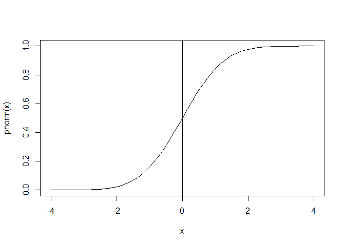
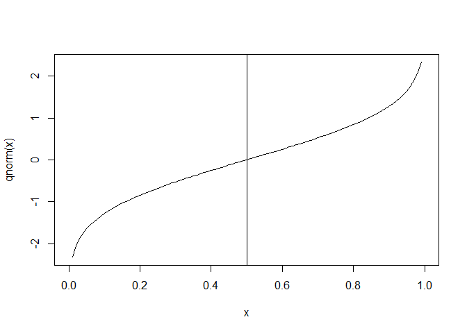
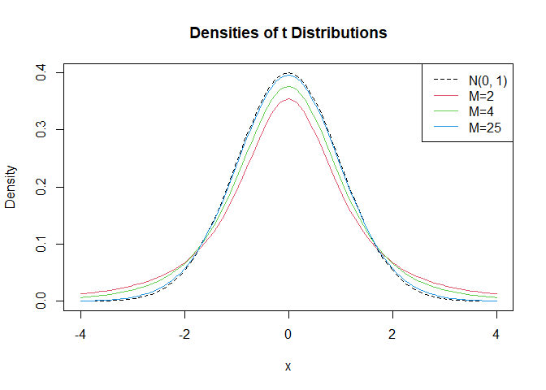
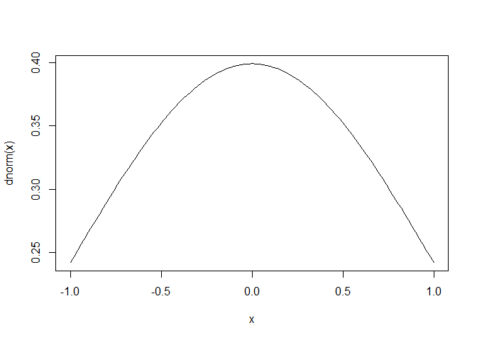
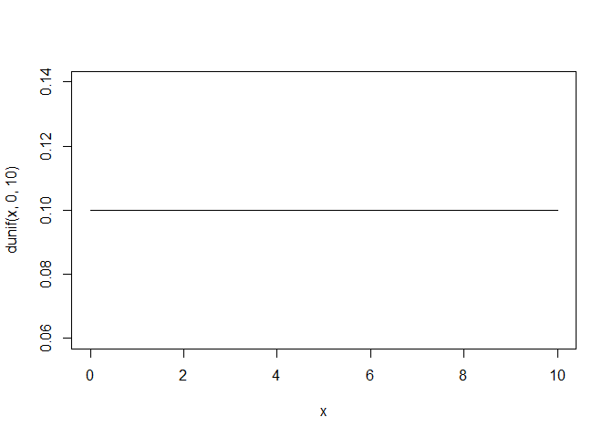
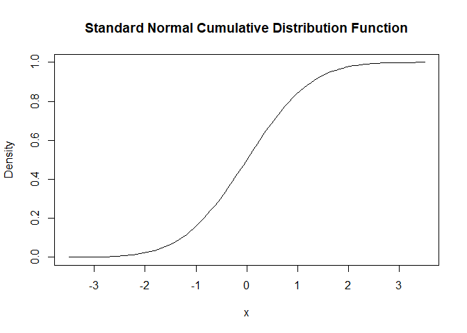
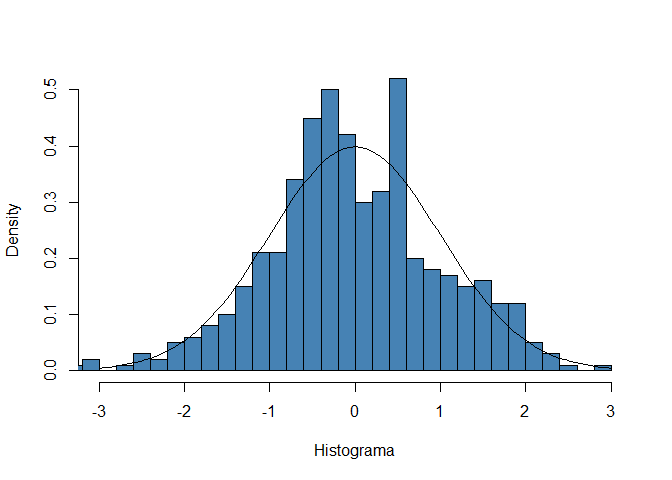
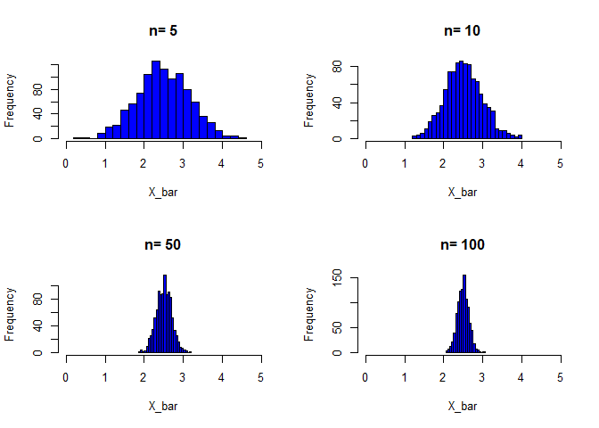
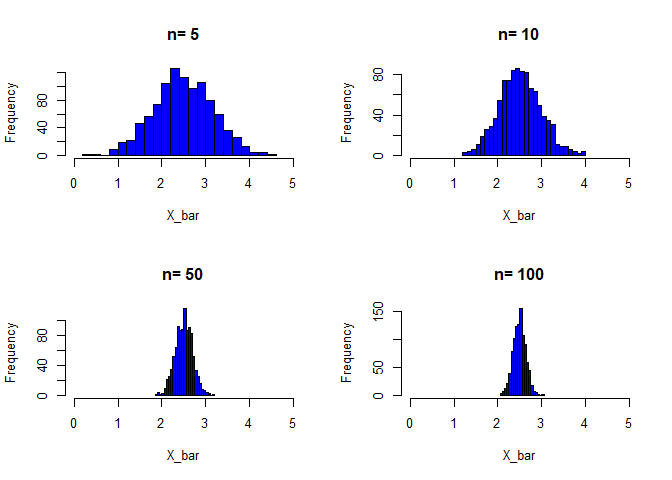
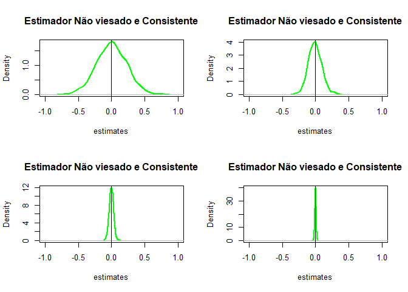

Monitoria Métodos Quantitativos II (Em construção)
1 - Introdução
2 - Principais Objetos
2.1 - Vetores
http://www.r-tutor.com/r-introduction/vector
Para criar vetores as duas principais funções no R são a função c e a função seq
c(2,4,3)## [1] 2 4 3seq(1:5)## [1] 1 2 3 4 5seq(from = 1, to =10,by=2)## [1] 1 3 5 7 9Armazenar o vetor criado em um objeto \(x\):
x <- c(seq(1:10))
x## [1] 1 2 3 4 5 6 7 8 9 10Combinando dois vetores
y = seq(from =11, to = 20)
z = c(x,y)
z## [1] 1 2 3 4 5 6 7 8 9 10 11 12 13 14 15 16 17 18 19 20O comando length permite obter o número de elementos de um vetor.
length(x)## [1] 10Álgebra vetorial
3*x## [1] 3 6 9 12 15 18 21 24 27 30x + y## [1] 12 14 16 18 20 22 24 26 28 30x-y## [1] -10 -10 -10 -10 -10 -10 -10 -10 -10 -10x * y## [1] 11 24 39 56 75 96 119 144 171 200x / y ## [1] 0.09090909 0.16666667 0.23076923 0.28571429 0.33333333 0.37500000
## [7] 0.41176471 0.44444444 0.47368421 0.50000000log(x)## [1] 0.0000000 0.6931472 1.0986123 1.3862944 1.6094379 1.7917595 1.9459101
## [8] 2.0794415 2.1972246 2.3025851exp(x)## [1] 2.718282 7.389056 20.085537 54.598150 148.413159
## [6] 403.428793 1096.633158 2980.957987 8103.083928 22026.465795sqrt(x)## [1] 1.000000 1.414214 1.732051 2.000000 2.236068 2.449490 2.645751 2.828427
## [9] 3.000000 3.162278-1*x## [1] -1 -2 -3 -4 -5 -6 -7 -8 -9 -10abs(-1*x)## [1] 1 2 3 4 5 6 7 8 9 10min(x)## [1] 1max(x)## [1] 10Regra da “reciclagem”
u = c(10, 20, 30)
v = c(1, 2, 3, 4, 5, 6, 7, 8, 9)
u + v ## [1] 11 22 33 14 25 36 17 28 39Indexação vetorial
y[2]## [1] 12y[-2]## [1] 11 13 14 15 16 17 18 19 202.2 - Matrizes
http://www.r-tutor.com/r-introduction/matrix
Usa-se a função matrix
matrix(data = NA, nrow = 1, ncol = 1, byrow = FALSE, dimnames = NULL)
Vamos ver alguns exemplos
A = matrix(
c(2, 4, 3, 1, 5, 7), # Elementos
nrow=2, # Número de linhas
ncol=3,) # Número de colunas
A## [,1] [,2] [,3]
## [1,] 2 3 5
## [2,] 4 1 7A = matrix(
c(2, 4, 3, 1, 5, 7), # Elementos
nrow=2, # Número de linhas
ncol=3, # Número de colunas
byrow = TRUE) # Preencher a matriz pelas linhas
A## [,1] [,2] [,3]
## [1,] 2 4 3
## [2,] 1 5 7Indexação matricial
A[2,3] # elemento da 2ª linha e 3ª coluna## [1] 7A[2,] # 2ª linha## [1] 1 5 7A[,3] # 3ª coluna## [1] 3 7A[ ,c(1,3)] # the 1st and 3rd columns ## [,1] [,2]
## [1,] 2 3
## [2,] 1 7Verificar as dimensões da matriz \(A\).
dim(A)## [1] 2 3nrow(A)## [1] 2ncol(A)## [1] 3Álgebra matricial
| Operador ou Função | Descrição |
|---|---|
| A * B | Multiplicação elemento por elemento |
| A%*%B | Multiplicação matricial |
| t(A) | Transposta |
| diag(x) | Cria uma matriz com os elementos do vetor x formando a diagonal principal |
| diag(A) | Retorna um vetor contendo os elementos da diagonal principal da matriz A |
| diag(k) | Se k for um escalar, o comando cria uma matriz identidade kxk |
| solve(A) | Retorna a inversa da matriz A se A for uma matriz quadrada |
| cbind(A,B,..) | Combina matrizes (vetores) adicionando colunas |
| rbind(A,B,..) | Combina matrizes (vetores) adicionando linhas |
| rowMeans(A) | Retorna um vetor com as médias das linhas de A |
| colMeans(A) | Retorna um vetor com as médias das colunas de A |
| rowSumns(A) | Retorna um vetor com as somas das linhas de A |
| ColSumns(A) | Retorna um vetor com as somas das colunas de A |
A = diag(c(1,2,3))
A## [,1] [,2] [,3]
## [1,] 1 0 0
## [2,] 0 2 0
## [3,] 0 0 3Transposta
t(A)## [,1] [,2] [,3]
## [1,] 1 0 0
## [2,] 0 2 0
## [3,] 0 0 3A %*% A## [,1] [,2] [,3]
## [1,] 1 0 0
## [2,] 0 4 0
## [3,] 0 0 9solve(A)## [,1] [,2] [,3]
## [1,] 1 0.0 0.0000000
## [2,] 0 0.5 0.0000000
## [3,] 0 0.0 0.3333333Combinando matrizes
B = matrix(
c(2, 4, 3, 1, 5, 7),
nrow=3,
ncol=2)
B # B possui 3 linhas e 2 colunas## [,1] [,2]
## [1,] 2 1
## [2,] 4 5
## [3,] 3 7C = matrix(
c(7, 4, 2),
nrow=3,
ncol=1)
C # C possui 3 linhas ## [,1]
## [1,] 7
## [2,] 4
## [3,] 2Combinando por coluna
cbind(B,C)## [,1] [,2] [,3]
## [1,] 2 1 7
## [2,] 4 5 4
## [3,] 3 7 2D = matrix(c(6,2),nrow = 1, ncol = 2)
D## [,1] [,2]
## [1,] 6 2Combinando por linha
rbind(B,D)## [,1] [,2]
## [1,] 2 1
## [2,] 4 5
## [3,] 3 7
## [4,] 6 22.3 - Dataframe
Um data frame é similar a um banco de dados no Stata, por exemplo.É mais geral do que matrizes, cada coluna pode ser composta por tipos diferentes (numérico, caracteres, fatores,..).
a = c(1,2)
b = c("a","b")
df = data.frame(a,b)
df## a b
## 1 1 a
## 2 2 bAdicionando nomes às colunas (variáveis)
names(df) = c("Variável 1", "Variável 2")
df## Variável 1 Variável 2
## 1 1 a
## 2 2 b2.4 - Fatores
# variable gender with 20 "male" entries and
# 30 "female" entries
gender <- c(rep("male",20), rep("female", 30))
summary(gender)## Length Class Mode
## 50 character charactergender <- factor(gender)
# stores gender as 20 1s and 30 2s and associates
# 1=female, 2=male internally (alphabetically)
# R now treats gender as a nominal variable
summary(gender)## female male
## 30 203 - Probabilidade
A Teoria da Probabilidade é a base para a economia e a econometria. Probabilidade é a linguagem matemática usada para lidar com a incerteza, que é central na moderna Teoria Econômica. A Teoria da Probabilidade é também a base da estatística matemática, que por sua vez é a base da econometria.
Espaço Amostral
Espaço amostral é o conjunto de todos os possíveis resultados de um experimento.
O pacote prob é uma ferramenta interessante do R para o estudo de probabilidades. No pacote probo espaço amostral é representado por um dataframe. Cada linha do dataframe corresponde a um resultado do experimento.
#install.packages("prob")
library(prob)Alguns exemplos de espaços amostrais
Jogar uma moeda.
tosscoin(1)## toss1
## 1 H
## 2 TJogar duas moedas
tosscoin(2)## toss1 toss2
## 1 H H
## 2 T H
## 3 H T
## 4 T TJogar um dado de seis faces.
rolldie(1)## X1
## 1 1
## 2 2
## 3 3
## 4 4
## 5 5
## 6 6Jogar dois dados de seis faces.
rolldie(2)## X1 X2
## 1 1 1
## 2 2 1
## 3 3 1
## 4 4 1
## 5 5 1
## 6 6 1
## 7 1 2
## 8 2 2
## 9 3 2
## 10 4 2
## 11 5 2
## 12 6 2
## 13 1 3
## 14 2 3
## 15 3 3
## 16 4 3
## 17 5 3
## 18 6 3
## 19 1 4
## 20 2 4
## 21 3 4
## 22 4 4
## 23 5 4
## 24 6 4
## 25 1 5
## 26 2 5
## 27 3 5
## 28 4 5
## 29 5 5
## 30 6 5
## 31 1 6
## 32 2 6
## 33 3 6
## 34 4 6
## 35 5 6
## 36 6 6cards()## rank suit
## 1 2 Club
## 2 3 Club
## 3 4 Club
## 4 5 Club
## 5 6 Club
## 6 7 Club
## 7 8 Club
## 8 9 Club
## 9 10 Club
## 10 J Club
## 11 Q Club
## 12 K Club
## 13 A Club
## 14 2 Diamond
## 15 3 Diamond
## 16 4 Diamond
## 17 5 Diamond
## 18 6 Diamond
## 19 7 Diamond
## 20 8 Diamond
## 21 9 Diamond
## 22 10 Diamond
## 23 J Diamond
## 24 Q Diamond
## 25 K Diamond
## 26 A Diamond
## 27 2 Heart
## 28 3 Heart
## 29 4 Heart
## 30 5 Heart
## 31 6 Heart
## 32 7 Heart
## 33 8 Heart
## 34 9 Heart
## 35 10 Heart
## 36 J Heart
## 37 Q Heart
## 38 K Heart
## 39 A Heart
## 40 2 Spade
## 41 3 Spade
## 42 4 Spade
## 43 5 Spade
## 44 6 Spade
## 45 7 Spade
## 46 8 Spade
## 47 9 Spade
## 48 10 Spade
## 49 J Spade
## 50 Q Spade
## 51 K Spade
## 52 A SpadeSubespaços
S = tosscoin(2)
subset(S, toss2 == "H")## toss1 toss2
## 1 H H
## 2 T HS <- cards()
subset(S, suit == "Heart")## rank suit
## 27 2 Heart
## 28 3 Heart
## 29 4 Heart
## 30 5 Heart
## 31 6 Heart
## 32 7 Heart
## 33 8 Heart
## 34 9 Heart
## 35 10 Heart
## 36 J Heart
## 37 Q Heart
## 38 K Heart
## 39 A Heartsubset(rolldie(2), X1+X2 > 8)## X1 X2
## 18 6 3
## 23 5 4
## 24 6 4
## 28 4 5
## 29 5 5
## 30 6 5
## 33 3 6
## 34 4 6
## 35 5 6
## 36 6 6Álgebra de conjuntos
União
S = cards()
A = subset(S, suit == "Heart")
B = subset(S, suit == "Club" )
union(A,B)## rank suit
## 1 2 Club
## 2 3 Club
## 3 4 Club
## 4 5 Club
## 5 6 Club
## 6 7 Club
## 7 8 Club
## 8 9 Club
## 9 10 Club
## 10 J Club
## 11 Q Club
## 12 K Club
## 13 A Club
## 27 2 Heart
## 28 3 Heart
## 29 4 Heart
## 30 5 Heart
## 31 6 Heart
## 32 7 Heart
## 33 8 Heart
## 34 9 Heart
## 35 10 Heart
## 36 J Heart
## 37 Q Heart
## 38 K Heart
## 39 A HeartInterseção
intersect(A,B)## [1] rank suit
## <0 rows> (or 0-length row.names)S = rolldie(2)
A = subset(S, X1 == 5)
B = subset(S, X1 + X2 >= 10)A## X1 X2
## 5 5 1
## 11 5 2
## 17 5 3
## 23 5 4
## 29 5 5
## 35 5 6B## X1 X2
## 24 6 4
## 29 5 5
## 30 6 5
## 34 4 6
## 35 5 6
## 36 6 6intersect(A,B)## X1 X2
## 29 5 5
## 35 5 6Diferença
A operação de diferença entre conjuntos, \(A-B\), forma um novo conjunto, contendo os elementos de \(A\) que não pertencem ao conjunto \(B\).
setdiff(A,B)## X1 X2
## 5 5 1
## 11 5 2
## 17 5 3
## 23 5 4Note que a operação diferença não é simétrica.
setdiff(B,A)## X1 X2
## 24 6 4
## 30 6 5
## 34 4 6
## 36 6 6Com a função setdiff é possivel calcular o complemento de um conjunto. Por exemplo, o complemento de A, denotado por Ac, é definido pelos elementos de S que não estão em A.
setdiff(S,A)## X1 X2
## 1 1 1
## 2 2 1
## 3 3 1
## 4 4 1
## 6 6 1
## 7 1 2
## 8 2 2
## 9 3 2
## 10 4 2
## 12 6 2
## 13 1 3
## 14 2 3
## 15 3 3
## 16 4 3
## 18 6 3
## 19 1 4
## 20 2 4
## 21 3 4
## 22 4 4
## 24 6 4
## 25 1 5
## 26 2 5
## 27 3 5
## 28 4 5
## 30 6 5
## 31 1 6
## 32 2 6
## 33 3 6
## 34 4 6
## 36 6 6Espaço de Probabilidades
Até aqui os elementos dos conjuntos não possuiam uma probabilidade associada. A partir de agora, acrescenta-se probabilidade a cada elemento do espaço amostral, transformando-o em um espaço de probabilidades.
outcomes = rolldie(1)
probability = rep(1/6, 6)
S = probspace(outcomes, probs = probability)
S## X1 probs
## 1 1 0.1666667
## 2 2 0.1666667
## 3 3 0.1666667
## 4 4 0.1666667
## 5 5 0.1666667
## 6 6 0.1666667probspace(1:6, probs = probability)## x probs
## 1 1 0.1666667
## 2 2 0.1666667
## 3 3 0.1666667
## 4 4 0.1666667
## 5 5 0.1666667
## 6 6 0.1666667probspace(1:6)## x probs
## 1 1 0.1666667
## 2 2 0.1666667
## 3 3 0.1666667
## 4 4 0.1666667
## 5 5 0.1666667
## 6 6 0.1666667rolldie(1, makespace = TRUE)## X1 probs
## 1 1 0.1666667
## 2 2 0.1666667
## 3 3 0.1666667
## 4 4 0.1666667
## 5 5 0.1666667
## 6 6 0.1666667Probabilidades desiguais
As funções acima criaram espaços de probabilidade com probabilidades iguais para cada possível resultado. Em muitos casos os possíveis resultados possuem probabilidades difentes.
Moeda não balanceada
probspace(tosscoin(1), probs = c(0.70, 0.30))## toss1 probs
## 1 H 0.7
## 2 T 0.3Experimentos idênticos e independentes repetidos
Situação em que certo experimento é repetido múltiplas vezes sob condições idênticas e de maneira independente.
iidspace(c("H","T"), ntrials = 3, probs = c(0.7, 0.3))## X1 X2 X3 probs
## 1 H H H 0.343
## 2 T H H 0.147
## 3 H T H 0.147
## 4 T T H 0.063
## 5 H H T 0.147
## 6 T H T 0.063
## 7 H T T 0.063
## 8 T T T 0.027Função de probabilidades
S = cards(makespace = TRUE)
A = subset(S, suit == "Heart")
B <- subset(S, rank %in% 7:9)Prob(A)## [1] 0.25Prob(S, suit == "Heart")## [1] 0.25Prob(B)## [1] 0.2307692Axiomas da Probabilidade
1 - \(P(A) \ge 0\)
2 - \(P(S) = 1\)
3 - Se \(A_1,A_2~,...\) forem disjunto, então \(P[ \cup_{j=1}^{\infty} A_j] = \sum_{j=1}^{\infty} P(A_j)\)
Definir Espaço de Probabilidades
S = rolldie(1, makespace = TRUE)
S## X1 probs
## 1 1 0.1666667
## 2 2 0.1666667
## 3 3 0.1666667
## 4 4 0.1666667
## 5 5 0.1666667
## 6 6 0.1666667Criar partição de \(S\).
A1 = subset(S, X1 == 1)
A2 = subset(S, X1 == 2 | X1 == 3)
A3 = subset(S, X1 == 4 | X1 == 5)
A4 = subset(S, X1 == 6)1 - \(P(A) \ge 0\)
Prob(A1)## [1] 0.16666672 - \(P(S) = 1\)
Prob(S)## [1] 13 - Se \(A_1,A_2~,...\) forem disjunto, então \(P[ \cup_{j=1}^{\infty} A_j] = \sum_{j=1}^{\infty} P(A_j)\)
Prob(union(A1,union(A2,A3)))## [1] 0.8333333Prob(A1) + Prob(A2) + Prob(A3)## [1] 0.8333333Propriedades da Função de Probabilidade
PAra verificar algums propriedades da Função de Probabilidade vamos criar três subconjuntos do espaço amostral \(S\).
A = subset(S, X1 >3)
A## X1 probs
## 4 4 0.1666667
## 5 5 0.1666667
## 6 6 0.1666667B = subset(S, X1 == 3 | X1 == 4)
B## X1 probs
## 3 3 0.1666667
## 4 4 0.1666667C = subset(S,X1 == 4 | X1 == 5)
C## X1 probs
## 4 4 0.1666667
## 5 5 0.16666671 - \(P(A^c) = 1 - P(A)\)
Prob(setdiff(S,A))## [1] 0.51 - Prob(A)## [1] 0.52 - \(P(\emptyset) = 0\)
empty = subset(S, X1 == 7)
Prob(empty)## [1] NA3 - \(P(A) \le 1\)
Prob(A)## [1] 0.54 - Se \(C \subset A\), então \(P(C) \le P(A)\)
isin(A[,1],C[,1])## [1] TRUEProb(C)## [1] 0.3333333Prob(A)## [1] 0.55 - \(P(A \cup B) = P(A) + P(B) - P(A \cap B)\)
Prob(union(A,B))## [1] 0.6666667Prob(A) + Prob(B) - Prob(intersect(A,B))## [1] 0.66666676 - \(P(A \cup B) \le P(A) + P(B)\)
Prob(union(A,B))## [1] 0.6666667Prob(A) + Prob(B)## [1] 0.8333333Probabilidade Condicional
\(P(A \mid B) = \frac{P(A \cap B)}{P(B)}, se P(B) >0\)
S = cards(makespace = TRUE)
A = subset(S, suit == "Heart")
B <- subset(S, rank %in% 7:9)\(P(A \mid B)\)
Prob(A, given = B)## [1] 0.25\(\frac{P(A \cap B)}{P(B)}\)
Prob(intersect(A,B) ) / Prob(B)## [1] 0.25Prob(S, suit=="Heart", given = rank %in% 7:9)## [1] 0.25Prob(B, given = A) ## [1] 0.2307692Regra da Adição
\(P(A \cup B) = P(A) + P(B) - P(A \cap B)\)
Prob(union(A,B))## [1] 0.4230769Prob(A) + Prob(B) - Prob(intersect(A,B))## [1] 0.4230769Regra da Multiplicação
\(P(A \cap B)=P(A)*P(B \mid A)\)
\(P(A \cap B)=P(B)*P(A \mid B)\)
Prob(intersect(A,B))## [1] 0.05769231Prob(A) * Prob(B, given = A)## [1] 0.05769231Prob(B) * Prob(A, given = B)## [1] 0.05769231Eventos Independentes
Três formas de mostrar que dois eventos são independentes.
\(P(A \cap B) = P(A) * P(B)\)
\(P(A \mid B) = P(A)\)
\(P(B \mid A) = P(B)\)
S <- tosscoin(2, makespace = TRUE)
S## toss1 toss2 probs
## 1 H H 0.25
## 2 T H 0.25
## 3 H T 0.25
## 4 T T 0.25A = subset(S, toss1 == "H")
B = subset(S, toss2 == "H")Prob(intersect(A,B))## [1] 0.25Prob(A)*Prob(B)## [1] 0.25Prob(A)## [1] 0.5Prob(A, given = B)## [1] 0.5Prob(B)## [1] 0.5Prob(B, given = A)## [1] 0.5Lei da Probabilidade Total
Teorema da Partição
\(A = \cup_{i=1}^{\infty} (A \cap B_i)\) , sendo \(B_i\) uma partição do Espaço Amostral S.
Como os eventos \((A \cap B_i)\) são disjuntos:
\(P(A) = \sum_{i=1}^{\infty} p(A \cap B_ì) = \sum_{i=1}^{\infty} P(A \mid B_i)*P(B_i)\)
S = rolldie(1, makespace = T)
B1 = subset(S, X1 == 1)
B2 = subset(S, X1 == 2 | X1 == 3)
B3 = subset(S, X1 == 4 | X1 == 5)
B4 = subset(S, X1 == 6)
A = subset(S, X1 >1 & X1 <=4)
A## X1 probs
## 2 2 0.1666667
## 3 3 0.1666667
## 4 4 0.1666667\(A = \cup_{i=1}^{\infty} (A \cap B_i)\)
union(intersect(A,B1),union(intersect(A,B2),union(intersect(A,B3),intersect(A,B4))))## X1 probs
## 2 2 0.1666667
## 3 3 0.1666667
## 4 4 0.1666667Prob(A)## [1] 0.5#Prob(union(intersect(A,B1),union(intersect(A,B2),union(intersect(A,B3),intersect(A,B4)))))
sum(Prob(intersect(A,B1)),Prob(intersect(A,B2)),Prob(intersect(A,B3)),Prob(intersect(A,B4)),na.rm=T)## [1] 0.5sum(Prob(A, given = B1)*Prob(B1),Prob(A, given = B2)* Prob(B2),Prob(A,given = B3) * Prob(B3),Prob(A,given = B4)*Prob(B4),na.rm=T)## [1] 0.5Amostragem
sample(1:6, 1)## [1] 2sample(1:6,3)## [1] 6 4 5sample(1:6, 4, replace = T)## [1] 5 6 5 6coins = tosscoin(2)
coins## toss1 toss2
## 1 H H
## 2 T H
## 3 H T
## 4 T Tcoins[sample(nrow(coins),2),]## toss1 toss2
## 1 H H
## 3 H TS = rolldie(3, nsides = 4, makespace = TRUE)
S## X1 X2 X3 probs
## 1 1 1 1 0.015625
## 2 2 1 1 0.015625
## 3 3 1 1 0.015625
## 4 4 1 1 0.015625
## 5 1 2 1 0.015625
## 6 2 2 1 0.015625
## 7 3 2 1 0.015625
## 8 4 2 1 0.015625
## 9 1 3 1 0.015625
## 10 2 3 1 0.015625
## 11 3 3 1 0.015625
## 12 4 3 1 0.015625
## 13 1 4 1 0.015625
## 14 2 4 1 0.015625
## 15 3 4 1 0.015625
## 16 4 4 1 0.015625
## 17 1 1 2 0.015625
## 18 2 1 2 0.015625
## 19 3 1 2 0.015625
## 20 4 1 2 0.015625
## 21 1 2 2 0.015625
## 22 2 2 2 0.015625
## 23 3 2 2 0.015625
## 24 4 2 2 0.015625
## 25 1 3 2 0.015625
## 26 2 3 2 0.015625
## 27 3 3 2 0.015625
## 28 4 3 2 0.015625
## 29 1 4 2 0.015625
## 30 2 4 2 0.015625
## 31 3 4 2 0.015625
## 32 4 4 2 0.015625
## 33 1 1 3 0.015625
## 34 2 1 3 0.015625
## 35 3 1 3 0.015625
## 36 4 1 3 0.015625
## 37 1 2 3 0.015625
## 38 2 2 3 0.015625
## 39 3 2 3 0.015625
## 40 4 2 3 0.015625
## 41 1 3 3 0.015625
## 42 2 3 3 0.015625
## 43 3 3 3 0.015625
## 44 4 3 3 0.015625
## 45 1 4 3 0.015625
## 46 2 4 3 0.015625
## 47 3 4 3 0.015625
## 48 4 4 3 0.015625
## 49 1 1 4 0.015625
## 50 2 1 4 0.015625
## 51 3 1 4 0.015625
## 52 4 1 4 0.015625
## 53 1 2 4 0.015625
## 54 2 2 4 0.015625
## 55 3 2 4 0.015625
## 56 4 2 4 0.015625
## 57 1 3 4 0.015625
## 58 2 3 4 0.015625
## 59 3 3 4 0.015625
## 60 4 3 4 0.015625
## 61 1 4 4 0.015625
## 62 2 4 4 0.015625
## 63 3 4 4 0.015625
## 64 4 4 4 0.015625S[sample(nrow(S),3),]## X1 X2 X3 probs
## 20 4 1 2 0.015625
## 49 1 1 4 0.015625
## 18 2 1 2 0.015625Amostragem sem repetição
A amostragem sem repetição implica em eventos não idênticamente distribuídos.
S = rolldie(1, makespace = TRUE)
S## X1 probs
## 1 1 0.1666667
## 2 2 0.1666667
## 3 3 0.1666667
## 4 4 0.1666667
## 5 5 0.1666667
## 6 6 0.1666667A = subset(S, X1 == 1)
Prob(A)## [1] 0.1666667E = S[sample(nrow(S),1),]
E## X1 probs
## 4 4 0.1666667S1 = subset(S, X1 != E$X1)
S1## X1 probs
## 1 1 0.1666667
## 2 2 0.1666667
## 3 3 0.1666667
## 5 5 0.1666667
## 6 6 0.1666667S1 = probspace(S1)
S1## X1 probs
## 1 1 0.2
## 2 2 0.2
## 3 3 0.2
## 5 5 0.2
## 6 6 0.2A = subset(S1, X1 == 1)
Prob(A)## [1] 0.2Variáveis Aleatórias
Variável Aleatória é uma função do espaço amostral \(S\) para a reta real \(R\).
\(X: S \rightarrow R\)
Variáveis Aleatórias Discretas
A Função de probabilidade de uma variável aleatória discreta é \(\pi(x) = P(X=x)\)
x = c(0,1,2,3)
f = c(1/8, 3/8 , 3/8, 1/8)Esperança
Para uma Variável Aleatória Discreta com suporte {x_j}, a esperança de X é:
$ E(X) = _{j=1}^{}x_j _j$
mu = sum(x * f)
mu## [1] 1.5Transformação de \(X\)
\(E[g(x)] = \sum_{j=1}^{\infty} g(_j) \pi_j\)
g = x*2 + 3
sum(g * f)## [1] 6Linearidade da Esperança
\(E(a+bX) = a + bE(X)\)
3 + 2*mu## [1] 6Função de Distribuição (Função de Distribuição Cumulativa)
A função de distribuição é \(F(x) = P(X \le x)\), que é a probabilidade do evento \({X \le x}\).
Para uma Variável Aleatória Discreta, com pontos de suporte \({x_j}\), a função de distribuição nos pontos do suporte é igual à soma cumulativa das probabilidades.
\(F(x_j) = \sum_{k=1}^j \pi(x_j)\)
F = cumsum(f)
F## [1] 0.125 0.500 0.875 1.000Variáveis Aleatórias Contínuas
f <- function(x) 3 * x^2F = integrate(f, lower = 0, upper = 0.7)
F## 0.343 with absolute error < 3.8e-154 - Álgebra dos Mínimos Quadrados
Limpar o Workspace
rm(list = ls())Essa seção tem por objetivo apresentar a álgebra do estimador de Míninos Quadrados Ordinários, seguindo o Capítulo 3 do Livro Econometrics do Bruce Hansen. Parte-se do Estimador de Beta ….
O objetivo é estimar \(\beta = (\mathbb{E} (xx'))^{-1} \mathbb{E}(xy)\)
Vamos estimar \(\beta\) pelo método dos momentos, ou seja, utilzando o análogo amostral aos momentos do estimador populacional. Existem duas formas para obter \(\hat\beta\), fazendo uso de somatórios ou da álgebra matricial. A álgebra matricial, além de uma notação mais concisa, é computacionalmente mais eficiente. No entanto, para ajudar a fixar conceitos, vamos estimar das duas formas.
Utilizando Somatórios
Estimar \(\hat{\beta}\) pela fórmula \(\hat{\beta} = (\sum_{i=1}^n x_i x'_i)^{-1} (\sum_{i=1}^n x_i y_i)\). Para evitar o uso de looping no momento de calcular os somatórios, vamos utilizar uma amostra com apenas dois indivíduos.
Criar um amostra com apenas dois indivíduos e duas variáveis. Para facilitar a exposição da álgebra, vamos estimar um modelo sem intercepto.\[y_i = \beta_1 x_{1i} + \beta_2 x_{2i} + e_i\] ou, \[y_i = x_i' \beta + e_i\]
sendo que
\(\beta = (\beta_{1}, \beta_{2})\)
e \(i = 1,2\).
x1 = c(2,3) # vetor coluna - observação do indivíduo 1
x1## [1] 2 3x2 = c(3,7) # vetor coluna - observação do indivíduo 2
x2## [1] 3 7Repare que apesar dos vetores terem sido apresentados como vetores linhas, eles são armazenados como vetores colunas. Para verificar, vamos calcular a transposta do vetor \(x_1\)
t(x1)## [,1] [,2]
## [1,] 2 3Como pode ser visto, a transposta do vetor \(x_1\) é um vetor linha. No entanto, para algumas operações os vetores se comportam como se fossem vetores linhas. Para evitar este tipo de problema, em um primeiro momento vamos utilizar a função matrix para criarmos os vetores também.
x1 = matrix(c(2,3), nrow = 2)
x1## [,1]
## [1,] 2
## [2,] 3x2 = matrix(c(3,7), nrow = 2)
x2 ## [,1]
## [1,] 3
## [2,] 7Para completar as informações do modelo vamos criar os erros individuais e o vetor \(\beta\).
e1 = 5
e2 = 7
beta = c(3,9)Dado os valores de \(X\), \(\beta\) e dos erros, os valores de \(y_i\) são obtidos diretamente.
Para ajudar no entendimento da notação e álgebra matricial, vamos calcular \(y_i\) de duas formas.
\(y_i = \beta_1 x1_{i} + \beta_2 x2_{i} + e_i\)
y1 = beta[1]* x1[1] + beta[2] * x1[2] +e1
y1## [1] 38y2 = beta[1]* x2[1] + beta[2] * x2[2] + e2
y2## [1] 79\(y_i = x'_i\beta + e_i\)
y1 = t(x1) %*% beta +e1
y1## [,1]
## [1,] 38y2 = t(x2) %*% beta +e2
y2## [,1]
## [1,] 79Estimar \(\hat{\beta}\) pela fórmula \(\hat{\beta} = (\sum_{i=1}^n x_i x'_i)^{-1} (\sum_{i=1}^n x_i y_i)\), sendo que \(Q_{xx} = (\sum_{i=1}^n x_i x'_i)\) e \(Q_{xy} = (\sum_{i=1}^n x_i y_i)\)
Qxx = x1 %*% t(x1) + x2 %*% t(x2) # Somatório xixi'
Qxx## [,1] [,2]
## [1,] 13 27
## [2,] 27 58Qxy = x1 %*% y1 + x2 %*% y2 ## Somatório xiyi
Qxy## [,1]
## [1,] 313
## [2,] 667beta_hat = solve(Qxx) %*% Qxy
beta_hat ## [,1]
## [1,] 5.8
## [2,] 8.8Estimar \(\hat{\beta}\) pela notação matricial \(\hat{\beta} = (X'X)^{-1}(X'y)\)
Criar a matriz \(X\). Lembre-se que \[X = \begin{bmatrix}x'_{1}\\ x'_{2} \end{bmatrix}\]
X = rbind(t(x1),t(x2)) # Matriz nxk
X## [,1] [,2]
## [1,] 2 3
## [2,] 3 7Criar o vetor \(y\). Lembre-se que \[y = \begin{bmatrix}y_{1}\\ y_{2} \end{bmatrix}\]
y = rbind(y1,y2)
y## [,1]
## [1,] 38
## [2,] 79Antes de estimar \(\beta\), vamos mostrar duas equivalências. Mostrar que \(\sum_{i=1}^n x_i x'_i\) = \(X'X\)
\(\sum_{i=1}^n x_i x'_i\)
soma = x1 %*% t(x1) + x2 %*% t(x2)
soma## [,1] [,2]
## [1,] 13 27
## [2,] 27 58\(X'X\)
XX = t(X) %*% X
XX## [,1] [,2]
## [1,] 13 27
## [2,] 27 58Mostrar que \(\sum_{i=1}^n x_i y_i\) = \(X'y\).
\(\sum_{i=1}^n x_i y_i\)
x1 %*% y1 + x2 %*% y2## [,1]
## [1,] 313
## [2,] 667\(X'y\)
t(X)%*%y## [,1]
## [1,] 313
## [2,] 667\(\hat{\beta} = (X'X)^{-1}(X'y)\)
beta_hat = solve(t(X)%*%X) %*% (t(X)%*%y)
beta_hat ## [,1]
## [1,] 5.8
## [2,] 8.8População e Amostra Aleatória
A primeira parte desta seção não se preocupou com a origem dos dados analisado, a ênfase foi em realçar as notações de somatório e matricial utilizadas na estimação da relação entre \(Y\) e \(X\). A partir de agora vamos enfatizar os conceitos de população e amostras aleatórias.
A verdadeira relação entre a variável dependente \(Y\) e as variáveis explicativas \(X\) nunca é conhecida. No entanto, podemos nos valer de um ambiente computacional e realizar simulações de dados tanto para exemplificar os conceitos de população e amostras quanto para destacar as propriedades do estimador de Mínimos Quadrados.
Vamos trabalhar com um mundo hipotético em que temos controle e conhecimento sobre as distribuições marginais do vetor de variáveis \(X\) e da relação entre \(X\) e \(Y\).
\(Y = X\beta + e\)
onde \(X = (1,X1,X2)\), sendo \(X1 \sim N(12,3)\), \(X2 \sim U(1,20)\) e \(e \sim N(0,1)\). O vetor \(\beta = (10,3,9)\) é o vetor de parâmetros do modelo a ser estimado. Estas informações definem a População de interesse. No entanto,
rm(list = ls())Obtendo 1000 amostras aleatórias \({x_i}\), sendo que \(x1\) possui uma distribuição normal com média 12 e desvio padrão 3 e \(x2\) possui uma distribuição uniforme com parâmetros mínimo igual a 1 e máximo igual a 20. O termo de erro provém de uma distribuição normal padrão (média 0 e desvio padrão 1).
set.seed(16)
n = 1000x1 = rnorm(1000, mean = 12, sd = 3) # Variável X1
x2 = runif(1000, min = 1, max = 20) # Variável X2
X = cbind(1,x1,x2)
e = rnorm(1000)Para enfatizar os conceitos de população e amostra, repare que mesmo ao controlar o tipo e os parâmetros da dsitribuição, os momentos amostrais não são idênticos aos parâmtros populacionais.
mean(x1)## [1] 12.12606sd(x1)## [1] 2.932318min(x2)## [1] 1.013482max(x2)## [1] 19.97247Vamos criar um vetor de parâmetros \(\beta\) pré determinados. Lembre-se que na vida real nunca conheceremos os verdadeiros parâmetros.
beta = matrix(c(10,3,9),nrow = 3)Calcular \(y\) a partir dos valores pré estabelecidos.
y = X%*%beta + ePortanto, o modelo é:
\(y_i = 10 + 3x1_i + 9x2_i + e_i\)
Estimar \(\hat\beta = (X'X)^{-1}(X'y)\)
B = solve(t(X)%*%X)%*%(t(X)%*%y)
B## [,1]
## 9.995817
## x1 2.997791
## x2 9.003035Valores ajustados e resíduos de Mínimos Quadrados \(\hat e = y - X\hat\beta\)
y_hat = X%*%B
e_hat = y - y_hate_hat = y - X%*%BVerificando que \(X'\hat e = 0\)
t(X)%*%e_hat## [,1]
## 4.458762e-10
## x1 9.043616e-09
## x2 6.956363e-09Matriz de Projeção: \(P = X(X'X)^{-1}X'\)
P = X%*%(solve(t(X)%*%X))%*%t(X)
dim(P)## [1] 1000 1000Verificando que \(PX = X(X'X)^{-1}X'X = X\)
PX = P%*%X
all(X == PX)## [1] FALSEall(round(X, digits = 2) == round(PX, digits = 2))## [1] TRUEPropriedade Idempotente: \(PP = P\)
all(P%*%P == P)## [1] FALSEall(round(P%*%P, digits = 2) == round(P, digits = 2))## [1] TRUECalcular \(Py = \hat y\).
y_hat1 = P%*%yall(y_hat == y_hat1)## [1] FALSEall(round(y_hat, digits = 2) == round(y_hat1, digits = 2))## [1] TRUEEstimação da Variância do erro: \(\sigma^2 = \mathbb{E}(e_i^2)\). O estimador natural para \(\sigma^2\) é o estimador de momentos \(\tilde\sigma = \frac{1}{n} \sum_{i=1}^n e_i^2\). No entanto, este estimador não é factível, pois não se conhece \(e_i\). A solução é adotar um estimador em dois estágios, substituindo \(e_i\) por \(\hat e_i\). Portanto, o estimador de \(\sigma^2\) é: \(\hat\sigma ^2 = \frac{1}{n} \sum_{i=1}^n \hat e_i^2\)
Em notação matricial \(\hat\sigma^2 = n^{-1}\hat e' \hat e\) ou \(\hat\sigma^2 = \frac{1}{n-k}\hat e' \hat e\).
k = ncol(X)
sigma_hat = (1/(n-k)) * t(e_hat)%*%e_hat # n-k correção de viés
sigma_hat## [,1]
## [1,] 1.014736\(R^2 = 1 - \frac{\sum_{i=1}^n \hat e_i^2}{\sum_{i=1}^n(y_i - \bar{y})}\)
y_barra = mean(y)
desvio = y - y_barra
R2 = 1 - (( t(e_hat)%*%e_hat)/(t(desvio)%*%desvio))
R2## [,1]
## [1,] 0.9995928Matriz de Variância Covariância
\[V_{\hat\beta} = (X'X)^{-1}X'DX(X'X)^{-1}\] onde \(D = diag(\sigma^2_1,...,\sigma^2_n)\)
\[D = \begin{bmatrix}\sigma^2_1 & ... & ...\\ 0 & \sigma^2_2 & 0 \\ & & \\ 0 & & \sigma^2_n \end{bmatrix}\]
e \(\sigma^2_i = E[e_i^2 | X_i]\)
O problema é que \(D\) não é observado e precisa ser estimada.
Matriz de Variância Covariância Homocedástica: se o modelo for homocedástico \(D = I_n\sigma^2\) e a matriz \(V_{\hat\beta}\) passa a ser escrita como
\(V_{\hat\beta}=\hat\sigma ^2 (X'X)^{-1}\), onde \(\hat\sigma^2 = \frac{1}{n-k}\hat e' \hat e\).
V = sigma_hat[1,1] * solve(t(X)%*%X)
V ## x1 x2
## 0.0229722105 -1.465321e-03 -3.932383e-04
## x1 -0.0014653210 1.183668e-04 2.816107e-06
## x2 -0.0003932383 2.816107e-06 3.371004e-05Os erros padrão são a raiz quadrada dos elementos da diagonal principal.
ep = sqrt(diag(V))
ep## x1 x2
## 0.151565862 0.010879649 0.005806035Matriz de Variância Covariância Heterocedástica
É preciso estimar \(D\). O estimador mais utilizado é:
\(\hat D = diag(\hat e^2_1, ... ,\hat e^2_n)\)
e = c(e_hat)
e = e*e
D = diag(e)
V_h = solve(t(X)%*%X)%*%(t(X)%*%D%*%X)%*%solve(t(X)%*%X)
V_h = (n/(n-k)) * V_h
V_h## x1 x2
## 0.0209004837 -1.352671e-03 -3.364705e-04
## x1 -0.0013526709 1.123094e-04 -5.335789e-07
## x2 -0.0003364705 -5.335789e-07 3.270841e-05Erros padrão.
ep_h = sqrt(diag(V_h))
ep_h## x1 x2
## 0.144569996 0.010597615 0.005719127Para verificar as estimações da matriz de Variância e Covariância bem como os próprios estimadores de \(\beta\), vamos utilizar as funções já programadas do \(R\).
df = data.frame(y,x1,x2)
ols = lm(y~x1 + x2)
summary(ols)##
## Call:
## lm(formula = y ~ x1 + x2)
##
## Residuals:
## Min 1Q Median 3Q Max
## -4.3423 -0.6863 -0.0020 0.6477 3.4863
##
## Coefficients:
## Estimate Std. Error t value Pr(>|t|)
## (Intercept) 9.995817 0.151566 65.95 <2e-16 ***
## x1 2.997791 0.010880 275.54 <2e-16 ***
## x2 9.003035 0.005806 1550.63 <2e-16 ***
## ---
## Signif. codes: 0 '***' 0.001 '**' 0.01 '*' 0.05 '.' 0.1 ' ' 1
##
## Residual standard error: 1.007 on 997 degrees of freedom
## Multiple R-squared: 0.9996, Adjusted R-squared: 0.9996
## F-statistic: 1.224e+06 on 2 and 997 DF, p-value: < 2.2e-16#install.packages("AER")
library(AER)vcov <- vcovHC(ols, type = "HC1")
vcov## (Intercept) x1 x2
## (Intercept) 0.0209004837 -1.352671e-03 -3.364705e-04
## x1 -0.0013526709 1.123094e-04 -5.335789e-07
## x2 -0.0003364705 -5.335789e-07 3.270841e-05#install.packages("psych")
#library(psych)
#tr(XX)Um pouco sobre funções de distribuições
Distribuição Normal
Função de distribuição (Função densidade)
curve(dnorm(x), xlim = c(-5,5))
abline(v=1)
dnorm(1)## [1] 0.2419707Função de probabilidade (Função cumulativa)
curve(pnorm(x), xlim = c(-4,4))
abline(v=0)
pnorm(0)## [1] 0.5Função quantílica (inversa da função de distribuição cumulativa)
curve(qnorm(x), xlim = c(0,1))
abline(v=0.5)
qnorm(0.5)## [1] 0Gerador de variáveis
rnorm(2)## [1] -1.6528987 -0.4617237Mostrar que a ditribuição t converge para a normal padrão
# plot the standard normal density
curve(dnorm(x),
xlim = c(-4, 4),
xlab = "x",
lty = 2,
ylab = "Density",
main = "Densities of t Distributions")
# plot the t density for M=2
curve(dt(x, df = 2),
xlim = c(-4, 4),
col = 2,
add = T)
# plot the t density for M=4
curve(dt(x, df = 4),
xlim = c(-4, 4),
col = 3,
add = T)
# plot the t density for M=25
curve(dt(x, df = 25),
xlim = c(-4, 4),
col = 4,
add = T)
# add a legend
legend("topright",
c("N(0, 1)", "M=2", "M=4", "M=25"),
col = 1:4,
lty = c(2, 1, 1, 1))
5- Um pouco de Inferência
Primeiro passo é criar um banco de dados hipotético
set.seed(1)
n = 500
x1 = rnorm(n, mean = 500, sd = 50)
x2 = rpois(n, lambda = 5)
e = rnorm(n)
beta = c(3.5,5)
y = 10 + beta[1]*x1 + beta[2]*x2 + e
X = cbind(1,x1,x2) ols = lm(y~ x1 + x2)
summary(ols)##
## Call:
## lm(formula = y ~ x1 + x2)
##
## Residuals:
## Min 1Q Median 3Q Max
## -3.15798 -0.71935 0.00887 0.70818 3.11361
##
## Coefficients:
## Estimate Std. Error t value Pr(>|t|)
## (Intercept) 9.6940067 0.4721931 20.53 <2e-16 ***
## x1 3.5002971 0.0009249 3784.62 <2e-16 ***
## x2 5.0274460 0.0212557 236.52 <2e-16 ***
## ---
## Signif. codes: 0 '***' 0.001 '**' 0.01 '*' 0.05 '.' 0.1 ' ' 1
##
## Residual standard error: 1.044 on 497 degrees of freedom
## Multiple R-squared: 1, Adjusted R-squared: 1
## F-statistic: 7.25e+06 on 2 and 497 DF, p-value: < 2.2e-16confint(ols,level = 0.95)## 2.5 % 97.5 %
## (Intercept) 8.766266 10.621748
## x1 3.498480 3.502114
## x2 4.985684 5.069208confint(ols,"Intercept",level = 0.95)## 2.5 % 97.5 %
## Intercept NA NAconfint(ols,"x1",level = 0.95)## 2.5 % 97.5 %
## x1 3.49848 3.502114confint(ols,"x2",level = 0.95)## 2.5 % 97.5 %
## x2 4.985684 5.069208B = solve(t(X)%*%X)%*%(t(X)%*%y)
B## [,1]
## 9.694007
## x1 3.500297
## x2 5.027446Calcular a estatística \(T\): \[t_n(\theta) = \frac{\hat \theta - \theta}{s(\hat \theta)}\]
Considerar \(\theta = 0\)
É preciso calcular \(s(\hat\theta)\)
#y_hat = X%*%B
e_hat = y - X%*%B
k = ncol(X)
sigma_hat = (1/(n-k)) * t(e_hat)%*%e_hat # n-k correção de viés
sigma_hat## [,1]
## [1,] 1.090167V = sigma_hat[1,1] * solve(t(X)%*%X)
ep = sqrt(diag(V))
ep## x1 x2
## 0.472193136 0.000924874 0.021255675t = B / ep
t## [,1]
## 20.52975
## x1 3784.62042
## x2 236.52253Intervalos de Confiança
\[C_n = [\hat \theta - c .s(\hat \theta), \hat\theta + c. s(\hat\theta)]\]
Definir c para nível de significância de \(5\%\)
c = qnorm(0.975)
c## [1] 1.959964Intervalo de Confiança de \(\beta_0\)
lower = B[1,1] - c* ep[1]
upper = B[1,1] + c * ep[1]
print(lower);print(upper)##
## 8.768525##
## 10.61949Intervalo de Confiança de \(\beta_1\)
lower = B[2,1] - c* ep[2]
upper = B[2,1] + c * ep[2]
print(lower);print(upper)## x1
## 3.498484## x1
## 3.50211Intervalo de Confiança de \(\beta_2\)
lower = B[3,1] - c* ep[3]
upper = B[3,1] + c * ep[3]
print(lower);print(upper)## x2
## 4.985786## x2
## 5.069106Definir c para nível de significância de \(1\%\)
c = qnorm(0.995)
c## [1] 2.575829Intervalo de Confiança de \(\beta_0\)
lower = B[1,1] - c* ep[1]
upper = B[1,1] + c * ep[1]
print(lower);print(upper)##
## 8.477718##
## 10.9103Intervalo de Confiança de \(\beta_1\)
lower = B[2,1] - c* ep[2]
upper = B[2,1] + c * ep[2]
print(lower);print(upper)## x1
## 3.497915## x1
## 3.502679Intervalo de Confiança de \(\beta_2\)
lower = B[3,1] - c* ep[3]
upper = B[3,1] + c * ep[3]
print(lower);print(upper)## x2
## 4.972695## x2
## 5.082197Utilizando a estatística t
c = qt(.975,n-k)
c## [1] 1.964749Intervalo de Confiança de \(\beta_2\)
lower = B[3,1] - c * ep[3]
upper = B[3,1] + c * ep[3]
print(lower);print(upper)## x2
## 4.985684## x2
## 5.069208P-valor
Assumindo que \(\beta \sim t_{n-k}\)
2 * pt(-t[1,1], df = n-k)##
## 2.783023e-682 * (1 - pt(t[1,1], df = n-k))##
## 0Assumindo que \(\beta \sim N(0,1)\)
2 * pnorm(-t[1,1])##
## 1.167757e-93Estatística F
RSS0 <- sum((y - mean(y))^2) #20181.97, this is same as TSS really
RSS <- sum(ols$residuals^2) #20181.64
p <- 2 #predictors whos coefficient we are testing.
n <- length(y) #number of observations
F <- ( (RSS0-RSS)/p ) / (RSS/(n-p-1))
F## [1] 7249721pf(F,2,497,lower.tail = FALSE)## [1] 0Simulações
Para executar esta lista de exercícios é importante enteder como funciona a estrutura para a realização de looping dentro do R
Uma das formas de utilizar looping é com o uso do for
for (i in 1:5){
print(i)
}## [1] 1
## [1] 2
## [1] 3
## [1] 4
## [1] 5for (i in c(1,5,3,8)){
print(i)
}## [1] 1
## [1] 5
## [1] 3
## [1] 8v = c(1,4,5,10)
for (n in 1:length(v)){
print(v[n])
}## [1] 1
## [1] 4
## [1] 5
## [1] 10Criar
A = matrix(rep(NA, 25), nrow = 5 )
for (j in 1:dim(A)[2]){
A[,j] = rnorm(5)
}
A## [,1] [,2] [,3] [,4] [,5]
## [1,] 0.06526642 -0.50313004 -0.4265299 -0.005667893 0.9938664
## [2,] 1.03532642 0.60745556 -0.9264042 0.633448919 0.6968459
## [3,] 2.26021579 -0.01004142 -0.9285579 -0.509180774 1.6999707
## [4,] 1.31469628 0.27533030 -0.7189006 -0.857008619 -0.9777419
## [5,] -0.87002335 -1.31229878 -0.4147906 1.616167577 2.0488176A = matrix(rep(NA, 25), nrow = 5 )
for (i in 1:dim(A)[1]){
for (j in 1:dim(A)[2]){
A[i,j] = rnorm(1)
}
}
A## [,1] [,2] [,3] [,4] [,5]
## [1,] 1.2264493 0.30702301 0.6243330 0.06134144 -0.1108258
## [2,] -1.5762336 0.74258985 2.1423234 2.08977296 0.1697943
## [3,] -0.1078778 0.18199449 1.1459282 1.47729882 0.4079442
## [4,] 1.1142787 -0.02707584 0.4977222 1.18564001 3.6395736
## [5,] -0.0540026 -0.66814732 0.4458080 -0.40582525 0.6352831v = c()
for (i in 1:10){
v[i] = mean(rnorm(5))
}
v## [1] 0.21192739 -0.34655883 0.24775529 0.08784537 -0.13465661 -0.59670709
## [7] -0.52832124 -0.02325222 -0.13099934 -0.36546438#{r} v = c() for (n in c(5,10,50,100,1000)){ for (i in 1:5){ v[i] = mean(rnorm(n)) } } v #
Comando replicate
set.seed(1)
x = replicate(n = 10, expr = rnorm(1))
x1 =c()
set.seed(1)
for (i in 1:10){
x1[i] = rnorm(1)
}
x == x1## [1] TRUE TRUE TRUE TRUE TRUE TRUE TRUE TRUE TRUE TRUEGráficos
Histograma
x = c(rnorm(500))
hist(x,
col = "steelblue",
freq = FALSE,
breaks = 40,
xlim = c(-3, 3),
ylim = c(0, 0.5),
xlab = paste("Histograma"),
main = "Teste")
curve(dnorm(x), xlim = c(-1,1))
curve(dunif(x,0,10), xlim = c(0,10))
curve(dt(x,10),xlim = c(-1,1))
curve(pnorm(x),
xlim = c(-3.5, 3.5),
ylab = "Density",
main = "Standard Normal Cumulative Distribution Function")
x = rnorm(5000)
plot(density(x))
x = c(rnorm(500))
hist(x,
col = "steelblue",
freq = FALSE,
breaks = 40,
xlim = c(-3, 3),
ylim = c(0, 0.5),
xlab = paste("Histograma"),
main = "")
curve(dnorm(x), add = TRUE)
x = rnorm(500)
plot(density(x), ylim = c(0,0.5), xlim = c(-4,4))
curve(dnorm(x), col = "red", add = TRUE)
Lei dos Grandes Números
par(mfrow = c(2, 2))
set.seed(1)
X_bar <- vector()
#loop em n
for (n in c(5, 10, 50, 100)) {
#loop para o monte carlo
for (iaux in 1:1000) {
X_bar[iaux] = mean(runif(n, 0, 5))
}
#faço o histograma
hist(X_bar, col="blue", breaks = 20, xlim = c(0,5), main = paste("n=",n))
}
par(mfrow = c(2, 2))
set.seed(1)
#loop em n
for (n in c(5, 10, 50, 100)) {
#loop para o monte carlo
X_bar = replicate(1000, mean(runif(n,0,5)))
#faço o histograma
hist(X_bar, col="blue", breaks = 20, xlim = c(0,5), main = paste("n=",n))
}
Teorema Central do Limite
par(mfrow = c(2, 2))
reps <- 10000
sample.sizes <- c(5, 20, 75, 100)
set.seed(123)
for (n in sample.sizes) {
samplemean <- rep(0, reps) #initialize the vector of sample menas
stdsamplemean <- rep(0, reps) #initialize the vector of standardized sample menas
# inner loop (loop over repetitions)
for (i in 1:reps) {
x <- rbinom(n, 1, 0.5)
samplemean[i] <- mean(x)
stdsamplemean[i] <- sqrt(n)*(mean(x) - 0.5)/0.5
}
# plot histogram and overlay the N(0,1) density in every iteration
hist(stdsamplemean,
col = "steelblue",
freq = FALSE,
breaks = 40,
xlim = c(-3, 3),
ylim = c(0, 0.8),
xlab = paste("n =", n),
main = "")
curve(dnorm(x),
lwd = 2,
col = "darkred",
add = TRUE)
}
Viés x consistência
set.seed(16)
par(mfrow = c(2, 2))
pop = 1000
for (i in c(20,100,1000,10000)){
fo = replicate(n = pop, expr = rnorm(i)[1])
plot(density(fo),
col = 'green',
lwd = 2,
ylim = c(0, 2),
xlab = 'estimates',
main = 'Estimador Não viesado e Não Consistente')
abline(v=0)
}
set.seed(16)
par(mfrow = c(2, 2))
pop = 100
for (i in c(20,100,1000,10000)){
fo = replicate(n = pop, expr = mean(rnorm(i)) - 0.99^i )
plot(density(fo),
col = 'green',
lwd = 2,
xlab = 'estimates',
xlim = c(-1,1),
main = 'Estimador Viesado e Consistente')
abline(v=0)
}
set.seed(16)
par(mfrow = c(2, 2))
pop = 1000
for (i in c(20,100,1000,10000)){
fo = replicate(n = pop, expr = mean(rnorm(i)))
plot(density(fo),
col = 'green',
lwd = 2,
xlab = 'estimates',
xlim = c(-1,1),
main = 'Estimador Não viesado e Consistente')
abline(v=0)
}
Verificação de consistência no modelo linear estimado por OLS
\[\mathbb{E}(xe) = \mathbb{E}(x)\mathbb{E}(e) + Cov(x,e)\]
Modelo não consistente
set.seed(1)
n = 1000
x1 = rnorm(n, 200, 20)
x2 = runif(n, 0,20)
e = rnorm(n) + 0.7* x1
X = cbind(1,x1,x2)
beta = c(3,7,2)
y = X%*%beta + eB = solve(t(X)%*%X)%*%(t(X)%*%y)
B## [,1]
## 2.771486
## x1 7.700914
## x2 2.003643e_hat = y - X%*%B
k = ncol(X)
sigma_hat = (1/(n-k)) * t(e_hat)%*%e_hat # n-k correção de viés
sigma_hat## [,1]
## [1,] 1.111484V = sigma_hat[1,1] * solve(t(X)%*%X)
ep = sqrt(diag(V))
ep## x1 x2
## 0.326740307 0.001612503 0.005730891t = (B-beta) / ep
t## [,1]
## -0.6993735
## x1 434.6745806
## x2 0.6356392c = qt(.975,n-k)
c## [1] 1.962346lower = B[1,1] - c * ep[1]
upper = B[1,1] + c * ep[1]
print(lower);print(upper)##
## 2.130309##
## 3.412664lower = B[2,1] - c * ep[2]
upper = B[2,1] + c * ep[2]
print(lower);print(upper)## x1
## 7.69775## x1
## 7.704078lower = B[3,1] - c * ep[3]
upper = B[3,1] + c * ep[3]
print(lower);print(upper)## x2
## 1.992397## x2
## 2.014889p0 = 2 * pt(-abs(t[1,1]), df = n-k)
p0##
## 0.4844818p1 = 2 * pt(-t[2,1], df = n-k)
p1## x1
## 0p2 = 2 * pt(-t[3,1], df = n-k)
p2## x2
## 0.5251575Modelo consistente
set.seed(1)
n = 1000
x1 = rnorm(n, 200, 20)
x2 = runif(n, 0,20)
e = rnorm(n) * x1
X = cbind(1,x1,x2)
beta = c(3,7,2)
y = X%*%beta + eB = solve(t(X)%*%X)%*%(t(X)%*%y)
B## [,1]
## -39.393089
## x1 7.168769
## x2 2.719188e_hat = y - X%*%B
k = ncol(X)
sigma_hat = (1/(n-k)) * t(e_hat)%*%e_hat # n-k correção de viés
sigma_hat## [,1]
## [1,] 44840.47V = sigma_hat[1,1] * solve(t(X)%*%X)
ep = sqrt(diag(V))
ep## x1 x2
## 65.62755 0.32388 1.15108t = (B-beta) / ep
t## [,1]
## -0.6459648
## x1 0.5210845
## x2 0.6247940c = qt(.975,n-k)
c## [1] 1.962346lower = B[1,1] - c * ep[1]
upper = B[1,1] + c * ep[1]
print(lower);print(upper)##
## -168.1771##
## 89.3909lower = B[2,1] - c * ep[2]
upper = B[2,1] + c * ep[2]
print(lower);print(upper)## x1
## 6.533204## x1
## 7.804333lower = B[3,1] - c * ep[3]
upper = B[3,1] + c * ep[3]
print(lower);print(upper)## x2
## 0.4603697## x2
## 4.978006p0 = 2 * pt(-abs(t[1,1]), df = n-k)
p0##
## 0.5184508p1 = 2 * pt(-t[2,1], df = n-k)
p1## x1
## 0.6024236p2 = 2 * pt(-t[3,1], df = n-k)
p2## x2
## 0.53224936 - Variáveis Instrumentais
Motivação para usar Variáveis Instrumentais: \(\mathbb{E}(xe) \neq 0\)
Vamos montar um modelo com endogeneidade entre \(x2\) e o termo de erro \(u\). Para resolver o problema de endogeneidade temos dois instrumentos \(z1\) e \(z2\).
set.seed(1)
n= 1000
z1 = rnorm(n)
z2 = runif(n,0,1)
u = rnorm(n)
x1 = rnorm(n)
x2 = u + 1.5*z2 + 0.7*z1 + rnorm(n)
X = cbind(1,x1,x2)
Z = cbind(1,x1,z1)
beta = c(2,5,2)
y = X%*%beta + uPara se verificar a quebra da hipóteses de identificação de OLS vamos verificar que realmente \(x2\) e o termo de erro são correlacionados.
cor(x2,u)## [1] 0.6290406Para se ter uma ideia se os instrumentos \(z1\) e \(z2\) são bons instrumentos vamos olhar as correlações entre os instrumentos o termo de erro e a variável endógena. Lembre-se que isto não é um teste formal para verificar bons instrumentos. Na prática nunca poderemos verificar a exogeneidade do instrumento em relação ao termo de erro (hipótese de exclusão) e a hipótese de inclusão não é apenas verificar a correlação.
cor(z1,u)## [1] 0.01866414cor(z1,x2)## [1] 0.4387025cor(z2,u)## [1] 0.02076497cor(z2,x2)## [1] 0.2871934Transformar nossas matrizes em um data frame para poder usar comandos prontos do R para estimar os parâmetros do modelo.
df = data.frame(y,x1,x2,z1,z2)Primeiro passo, vamos verificar se o estimador de Mínimos Quadrados produz estimativas consistentes.
Bols = solve(t(X)%*%X)%*%t(X)%*%y
Bols## [,1]
## 1.718877
## x1 4.982925
## x2 2.396982e_hat = y - X%*%Bols
k = ncol(X)
sigma_hat = (1/(n-k)) * t(e_hat)%*%e_hat # n-k correção de viés
sigma_hat## [,1]
## [1,] 0.671866V = sigma_hat[1,1] * solve(t(X)%*%X)
ep = sqrt(diag(V))
ep## x1 x2
## 0.02803539 0.02482633 0.01552800t = (Bols-beta) / ep
t## [,1]
## -10.0274202
## x1 -0.6877739
## x2 25.5655930p0 = 2 * pt(-abs(t[1,1]), df = n-k)
p0##
## 1.304608e-22p1 = 2 * pt(-abs(t[2,1]), df = n-k)
p1## x1
## 0.4917551p2 = 2 * pt(-abs(t[3,1]), df = n-k)
p2## x2
## 2.871617e-111Como pode ser visto, \(\hat \beta_2\) não é um bom estimador para \(\beta_2\).
Dados que o estimador de Mínimos Quadrados não é um bom estimador para o modelo apresentados acima, vamos usar o Estimador de Variáveis Instrumentais e verificar se ele é um bom estimador. O estimador abaixo é o estimador IV, considerando apenas um instrumento, \(z1\).
Biv = solve(t(Z)%*%X)%*%t(Z)%*%y
Biv## [,1]
## 1.971384
## x1 5.000386
## x2 2.026832e_hat_iv = y - X%*%Biv
k = ncol(X)
sigma_hat_iv = (1/(n-k)) * t(e_hat_iv)%*%e_hat_iv ## O R faz a correção do viés dividindo por (n-k) o Stata só divide por n
sigma_hat_iv## [,1]
## [1,] 1.054791V_iv = sigma_hat_iv[1,1] * solve((t(X)%*%Z)%*%solve(t(Z)%*%Z)%*%t(Z)%*%X)
ep_iv = sqrt(diag(V_iv))
ep_iv## x1 x2
## 0.04439952 0.03116335 0.04430637z_iv = (Biv) / ep_iv
z_iv## [,1]
## 44.40102
## x1 160.45727
## x2 45.74583p0 = 2 * pnorm(-t[1,1])
p0##
## 2p1 = 2 * pnorm(-t[2,1])
p1## x1
## 1.508405p2 = 2 * pnorm(-t[3,1])
p2## x2
## 3.683701e-144z_iv = (Biv-beta) / ep_iv
z_iv## [,1]
## -0.64450672
## x1 0.01237549
## x2 0.60560060p0 = 2 * pnorm(-abs(z_iv[1,1]))
p0##
## 0.5192469p1 = 2 * pnorm(-abs(z_iv[2,1]))
p1## x1
## 0.990126p2 = 2 * pnorm(-abs(z_iv[3,1]))
p2## x2
## 0.54478Verificar o resultado encontrado utilizando o comando ivreg do \(R\).
iv = ivreg(y ~ x1 + x2 | x1 + z1, data = df)
summary(iv)##
## Call:
## ivreg(formula = y ~ x1 + x2 | x1 + z1, data = df)
##
## Residuals:
## Min 1Q Median 3Q Max
## -3.35439 -0.65777 -0.01778 0.72615 3.10752
##
## Coefficients:
## Estimate Std. Error t value Pr(>|t|)
## (Intercept) 1.97138 0.04440 44.40 <2e-16 ***
## x1 5.00039 0.03116 160.46 <2e-16 ***
## x2 2.02683 0.04431 45.75 <2e-16 ***
## ---
## Signif. codes: 0 '***' 0.001 '**' 0.01 '*' 0.05 '.' 0.1 ' ' 1
##
## Residual standard error: 1.027 on 997 degrees of freedom
## Multiple R-Squared: 0.9766, Adjusted R-squared: 0.9766
## Wald test: 1.448e+04 on 2 and 997 DF, p-value: < 2.2e-16Estimador de Variáveis Instrumentais de dois Estágios - 2SLS
Utilizando apenas um instrumento
\(\hat \beta_{2sls} = (X'Z(Z'Z)^{-1}Z'X)^{-1}X'Z(Z'Z)^{-1}Z'y\)
B2sls = solve(t(X)%*%Z%*%solve(t(Z)%*%Z)%*%t(Z)%*%X)%*%t(X)%*%Z%*%solve(t(Z)%*%Z)%*%t(Z)%*%y
B2sls## [,1]
## 1.971384
## x1 5.000386
## x2 2.026832Por que o nome de dois estágios? Pois é possível obter as mesmas estimativas realizando um procedimento em dois estágios conforme pode ser observado abaixo.
B1 = solve(t(Z)%*%Z)%*%t(Z)%*%x2
x_hat = Z%*%B1
X_hat = cbind(1,x1,x_hat)Antes de estimar o 2º estágio, repare que o 1º estágio “limpou” a endogeneidade que existia em \(x2\).
cor(x_hat,u)## [,1]
## [1,] 0.01874478res =x2 - x_hat
cor(res,u)## [,1]
## [1,] 0.69128192º estágio:
B2sls = solve(t(X_hat)%*%X_hat)%*%t(X_hat)%*%y
B2sls## [,1]
## 1.971384
## x1 5.000386
## 2.026832Comparar os resultados obtidos pelo estimador IV com o estimador 2SLS:
round(B2sls, 6) == round(Biv,6)## [,1]
## TRUE
## x1 TRUE
## TRUEApesar da estimação utilizando um procedimento em dois estágios produzir estimativas idênticas para os parâmetros \(\beta\) do modelo, as estimativas dos erros padrão precisam ser corrigidas.
\(V_{ols} = \sigma^2 * (\hat X' \hat X)^{-1}\)
e_hat_2 = y - X_hat%*%B2sls
k = ncol(X)
sigma_hat_2 = (1/(n-k)) * t(e_hat_2)%*%e_hat_2 # n-k correção de viés
sigma_hat_2## [,1]
## [1,] 14.5157V_ols = sigma_hat_2[1,1] * solve((t(X_hat)%*%X_hat))
ep_ols = sqrt(diag(V_ols))
ep_ols## x1
## 0.1647078 0.1156059 0.1643622\(V_{2sls} = \sigma^2 * (\hat X' \hat X)^{-1}\)
e_hat_2sls = y - X%*%B2sls
k = ncol(X)
sigma_hat_2sls = (1/(n)) * t(e_hat_2sls)%*%e_hat_2sls # n-k correção de viés
sigma_hat_2sls## [,1]
## [1,] 1.051626V_2sls = sigma_hat_2sls[1,1] * solve((t(X_hat)%*%X_hat))
ep_2sls = sqrt(diag(V_2sls))
ep_2sls## x1
## 0.04433287 0.03111657 0.04423986z_2sls = (B2sls) / ep_2sls
z_2sls## [,1]
## 44.46778
## x1 160.69850
## 45.81461p0 = 2 * pnorm(-abs(z_2sls[1,1]))
p0##
## 0p1 = 2 * pnorm(-abs(z_2sls[2,1]))
p1## x1
## 0p2 = 2 * pnorm(-abs(z_2sls[3,1]))
p2##
## 0z_2sls = (B2sls - beta) / ep_2sls
z_2sls## [,1]
## -0.64547567
## x1 0.01239409
## 0.60651105p0 = 2 * pnorm(-abs(z_2sls[1,1]))
p0##
## 0.518619p1 = 2 * pnorm(-abs(z_2sls[2,1]))
p1## x1
## 0.9901112p2 = 2 * pnorm(-abs(z_2sls[3,1]))
p2##
## 0.5441754Utilizando dois instrumentos
Z = cbind(1,x1,z1,z2)
B2 = solve(t(Z)%*%Z)%*%t(Z)%*%x2
x_hat = Z%*%B2
X_hat = cbind(1,x1,x_hat)
B2sls2 = solve(t(X_hat)%*%X_hat)%*%t(X_hat)%*%y
B2sls2## [,1]
## 1.967624
## x1 5.000126
## 2.032344B2sls2 = solve(t(X)%*%Z%*%solve(t(Z)%*%Z)%*%t(Z)%*%X)%*%t(X)%*%Z%*%solve(t(Z)%*%Z)%*%t(Z)%*%y
B2sls2## [,1]
## 1.967624
## x1 5.000126
## x2 2.032344e_hat_2sls2 = y - X%*%B2sls2
k = ncol(X)
sigma_hat_2sls2 = (1/(n)) * t(e_hat_2sls2)%*%e_hat_2sls2 # n-k correção de viés
sigma_hat_2sls2## [,1]
## [1,] 1.040341V_2sls2 = sigma_hat_2sls2[1,1] * solve((t(X)%*%Z)%*%solve(t(Z)%*%Z)%*%t(Z)%*%X)
ep_2sls2 = sqrt(diag(V_2sls2))
ep_2sls2## x1 x2
## 0.04115102 0.03092977 0.03737644Usar mais de um instrumento (caso exista mais de um bom instrumento) faz com que o estimador seja mais eficiente.
ep_2sls2 < ep_2sls## x1 x2
## TRUE TRUE TRUEz_2sls2 = (B2sls2) / ep_2sls2
z_2sls2## [,1]
## 47.81471
## x1 161.66063
## x2 54.37500p0 = 2 * pnorm(-abs(z_2sls2[1,1]))
p0##
## 0p1 = 2 * pnorm(-abs(z_2sls2[2,1]))
p1## x1
## 0p2 = 2 * pnorm(-abs(z_2sls2[3,1]))
p2## x2
## 0z_2sls2 = (B2sls2 - beta) / ep_2sls2
z_2sls2## [,1]
## -0.786757106
## x1 0.004062665
## x2 0.865354116p0 = 2 * pnorm(-abs(z_2sls2[1,1]))
p0##
## 0.4314241p1 = 2 * pnorm(-abs(z_2sls2[2,1]))
p1## x1
## 0.9967585p2 = 2 * pnorm(-abs(z_2sls2[3,1]))
p2## x2
## 0.38684457 - sistemas de Equações
# Specify a variable to hold number of observations
obs = 10000
# Create independent variables
z1 = rnorm(obs)
z2 = rnorm(obs)
# Create error
u1 = rnorm(obs)
u2 = rnorm(obs)
# Create endogenous variable
x1 = .5*z1 - z2 + u1 + rnorm(obs)
x2 = 1.5*z1 - 2*z2 - u2 + rnorm(obs)
x3 = rnorm(obs)
# Create dependent variable
y1 = 5 + 2*x1 - x2 + x3 + u1*5 - u2*2
y2 = -5 - 2*x1 + x2 - 2*x3 + u2*5 - u1*1X = cbind(x1,x2,x3,1)
Y = cbind(y1,y2)SOLS = solve(t(X)%*%X)%*%t(X)%*%Y
SOLS## y1 y2
## x1 3.850396 -1.7283734
## x2 -1.363058 0.2821534
## x3 1.045975 -2.0799644
## 5.077809 -5.0765309X1 = cbind(x1,x2,x3,1)
X2 = cbind(x1,x2,x3,1)
X = rbind(cbind(X1,0,0,0,0),cbind(0,0,0,0,X2))
Y = matrix(c(y1,y2),ncol=1)SUR = solve(t(X)%*%X)%*%t(X)%*%Y
SUR## [,1]
## x1 3.8503964
## x2 -1.3630578
## x3 1.0459747
## 5.0778093
## -1.7283734
## 0.2821534
## -2.0799644
## -5.0765309df = data.frame(y1,y2,x1,x2,x3,z1,z2)eq1 <- y1 ~ x1 + x2 + x3
eq2 <- y2 ~ x1 + x2 + x3
system <- list (eq1 = eq1, eq2 = eq2)# OLS regression
olsreg1 <- lm(y1 ~ X1)
summary(olsreg1)##
## Call:
## lm(formula = y1 ~ X1)
##
## Residuals:
## Min 1Q Median 3Q Max
## -18.6249 -3.1458 0.0304 3.1251 16.5527
##
## Coefficients: (1 not defined because of singularities)
## Estimate Std. Error t value Pr(>|t|)
## (Intercept) 5.07781 0.04589 110.64 <2e-16 ***
## X1x1 3.85040 0.02963 129.95 <2e-16 ***
## X1x2 -1.36306 0.01894 -71.96 <2e-16 ***
## X1x3 1.04597 0.04610 22.69 <2e-16 ***
## X1 NA NA NA NA
## ---
## Signif. codes: 0 '***' 0.001 '**' 0.01 '*' 0.05 '.' 0.1 ' ' 1
##
## Residual standard error: 4.588 on 9996 degrees of freedom
## Multiple R-squared: 0.6362, Adjusted R-squared: 0.6361
## F-statistic: 5827 on 3 and 9996 DF, p-value: < 2.2e-16olsreg2 <- lm(y2 ~ X2)
summary(olsreg2)##
## Call:
## lm(formula = y2 ~ X2)
##
## Residuals:
## Min 1Q Median 3Q Max
## -18.5107 -3.2407 -0.0232 3.1955 17.9632
##
## Coefficients: (1 not defined because of singularities)
## Estimate Std. Error t value Pr(>|t|)
## (Intercept) -5.07653 0.04796 -105.85 <2e-16 ***
## X2x1 -1.72837 0.03096 -55.82 <2e-16 ***
## X2x2 0.28215 0.01980 14.25 <2e-16 ***
## X2x3 -2.07996 0.04818 -43.17 <2e-16 ***
## X2 NA NA NA NA
## ---
## Signif. codes: 0 '***' 0.001 '**' 0.01 '*' 0.05 '.' 0.1 ' ' 1
##
## Residual standard error: 4.795 on 9996 degrees of freedom
## Multiple R-squared: 0.3478, Adjusted R-squared: 0.3476
## F-statistic: 1777 on 3 and 9996 DF, p-value: < 2.2e-16# SUR
#install.packages("systemfit")
library(systemfit)## Loading required package: Matrix##
## Please cite the 'systemfit' package as:
## Arne Henningsen and Jeff D. Hamann (2007). systemfit: A Package for Estimating Systems of Simultaneous Equations in R. Journal of Statistical Software 23(4), 1-40. http://www.jstatsoft.org/v23/i04/.
##
## If you have questions, suggestions, or comments regarding the 'systemfit' package, please use a forum or 'tracker' at systemfit's R-Forge site:
## https://r-forge.r-project.org/projects/systemfit/sur <- systemfit(system, method = "SUR", data = df)
summary(sur)##
## systemfit results
## method: SUR
##
## N DF SSR detRCov OLS-R2 McElroy-R2
## system 20000 19992 440273 249.28 0.527035 0.524224
##
## N DF SSR MSE RMSE R2 Adj R2
## eq1 10000 9996 210451 21.0535 4.58841 0.636204 0.636095
## eq2 10000 9996 229822 22.9914 4.79494 0.347823 0.347627
##
## The covariance matrix of the residuals used for estimation
## eq1 eq2
## eq1 21.0535 -15.3222
## eq2 -15.3222 22.9914
##
## The covariance matrix of the residuals
## eq1 eq2
## eq1 21.0535 -15.3222
## eq2 -15.3222 22.9914
##
## The correlations of the residuals
## eq1 eq2
## eq1 1.000000 -0.696427
## eq2 -0.696427 1.000000
##
##
## SUR estimates for 'eq1' (equation 1)
## Model Formula: y1 ~ x1 + x2 + x3
##
## Estimate Std. Error t value Pr(>|t|)
## (Intercept) 5.0778093 0.0458927 110.6452 < 2.22e-16 ***
## x1 3.8503964 0.0296298 129.9500 < 2.22e-16 ***
## x2 -1.3630578 0.0189426 -71.9572 < 2.22e-16 ***
## x3 1.0459747 0.0461016 22.6885 < 2.22e-16 ***
## ---
## Signif. codes: 0 '***' 0.001 '**' 0.01 '*' 0.05 '.' 0.1 ' ' 1
##
## Residual standard error: 4.588406 on 9996 degrees of freedom
## Number of observations: 10000 Degrees of Freedom: 9996
## SSR: 210450.500457 MSE: 21.053471 Root MSE: 4.588406
## Multiple R-Squared: 0.636204 Adjusted R-Squared: 0.636095
##
##
## SUR estimates for 'eq2' (equation 2)
## Model Formula: y2 ~ x1 + x2 + x3
##
## Estimate Std. Error t value Pr(>|t|)
## (Intercept) -5.0765309 0.0479584 -105.8528 < 2.22e-16 ***
## x1 -1.7283734 0.0309635 -55.8197 < 2.22e-16 ***
## x2 0.2821534 0.0197952 14.2536 < 2.22e-16 ***
## x3 -2.0799644 0.0481767 -43.1737 < 2.22e-16 ***
## ---
## Signif. codes: 0 '***' 0.001 '**' 0.01 '*' 0.05 '.' 0.1 ' ' 1
##
## Residual standard error: 4.794937 on 9996 degrees of freedom
## Number of observations: 10000 Degrees of Freedom: 9996
## SSR: 229822.217381 MSE: 22.991418 Root MSE: 4.794937
## Multiple R-Squared: 0.347823 Adjusted R-Squared: 0.347627SIV
X = cbind(x1, x2, x3, 1)
Y = cbind(y1,y2)
Z = cbind(x3, z1, z2, 1)SIV = solve(t(X)%*%Z%*%solve(t(Z)%*%Z)%*%t(Z)%*%X)%*%t(X)%*%Z%*%solve(t(Z)%*%Z)%*%t(Z)%*%Y
SIV## y1 y2
## x1 2.323989 -2.093188
## x2 -1.142112 1.037718
## x3 1.057396 -2.046468
## 5.036751 -5.057870Equção por equação
IV1 = solve(t(X)%*%Z%*%solve(t(Z)%*%Z)%*%t(Z)%*%X)%*%t(X)%*%Z%*%solve(t(Z)%*%Z)%*%t(Z)%*%y1
IV1## [,1]
## x1 2.323989
## x2 -1.142112
## x3 1.057396
## 5.036751IV2 = solve(t(X)%*%Z%*%solve(t(Z)%*%Z)%*%t(Z)%*%X)%*%t(X)%*%Z%*%solve(t(Z)%*%Z)%*%t(Z)%*%y2
IV2## [,1]
## x1 -2.093188
## x2 1.037718
## x3 -2.046468
## -5.057870siv <- systemfit(system, method = "3SLS", inst = ~ x3 + z1 + z2, data = df)
summary(siv)##
## systemfit results
## method: 3SLS
##
## N DF SSR detRCov OLS-R2 McElroy-R2
## system 20000 19992 539029 486.251 0.420945 0.335967
##
## N DF SSR MSE RMSE R2 Adj R2
## eq1 10000 9996 273446 27.3555 5.23025 0.527307 0.527165
## eq2 10000 9996 265583 26.5689 5.15451 0.246343 0.246116
##
## The covariance matrix of the residuals used for estimation
## eq1 eq2
## eq1 27.3555 -15.5099
## eq2 -15.5099 26.5689
##
## The covariance matrix of the residuals
## eq1 eq2
## eq1 27.3555 -15.5099
## eq2 -15.5099 26.5689
##
## The correlations of the residuals
## eq1 eq2
## eq1 1.000000 -0.575306
## eq2 -0.575306 1.000000
##
##
## 3SLS estimates for 'eq1' (equation 1)
## Model Formula: y1 ~ x1 + x2 + x3
## Instruments: ~x3 + z1 + z2
##
## Estimate Std. Error t value Pr(>|t|)
## (Intercept) 5.0367515 0.0524124 96.0985 < 2.22e-16 ***
## x1 2.3239888 0.2227733 10.4321 < 2.22e-16 ***
## x2 -1.1421121 0.1015902 -11.2423 < 2.22e-16 ***
## x3 1.0573965 0.0527512 20.0450 < 2.22e-16 ***
## ---
## Signif. codes: 0 '***' 0.001 '**' 0.01 '*' 0.05 '.' 0.1 ' ' 1
##
## Residual standard error: 5.230253 on 9996 degrees of freedom
## Number of observations: 10000 Degrees of Freedom: 9996
## SSR: 273446.02145 MSE: 27.355544 Root MSE: 5.230253
## Multiple R-Squared: 0.527307 Adjusted R-Squared: 0.527165
##
##
## 3SLS estimates for 'eq2' (equation 2)
## Model Formula: y2 ~ x1 + x2 + x3
## Instruments: ~x3 + z1 + z2
##
## Estimate Std. Error t value Pr(>|t|)
## (Intercept) -5.0578696 0.0516533 -97.91951 < 2.22e-16 ***
## x1 -2.0931881 0.2195470 -9.53412 < 2.22e-16 ***
## x2 1.0377181 0.1001190 10.36485 < 2.22e-16 ***
## x3 -2.0464675 0.0519872 -39.36483 < 2.22e-16 ***
## ---
## Signif. codes: 0 '***' 0.001 '**' 0.01 '*' 0.05 '.' 0.1 ' ' 1
##
## Residual standard error: 5.154506 on 9996 degrees of freedom
## Number of observations: 10000 Degrees of Freedom: 9996
## SSR: 265583.095816 MSE: 26.568937 Root MSE: 5.154506
## Multiple R-Squared: 0.246343 Adjusted R-Squared: 0.246116